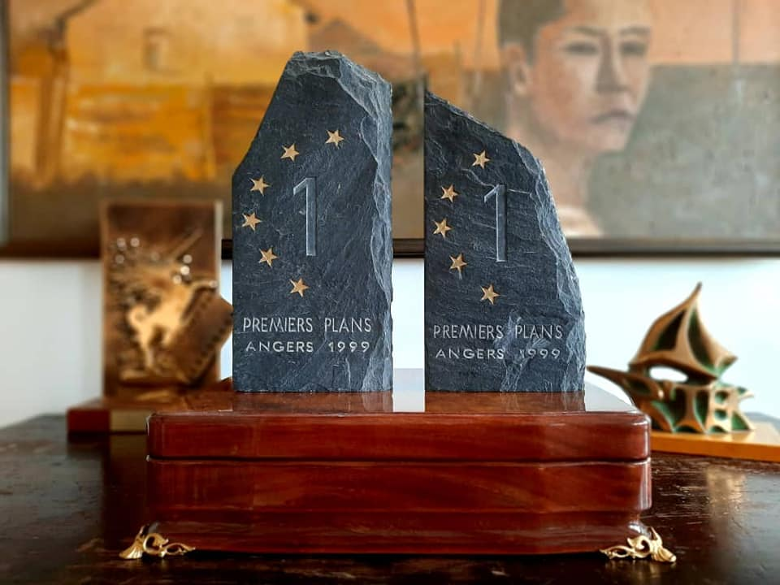

{% extends 'main/base.html' %}
{% block title %}
about
{% endblock %}
{% block content %}

"В январе 1999 года продюсеры устроили своего рода турне по Европейским кинофестивалям. Нас тогда было трое: я, Хасан Кыдыралиев, Эркин Болжуров, и после Парижа, Роттердама, мы приехали в Анже.
"Бешкемпир" был в конкурсной программе. На показах, обычно смотрю начало, затем ухожу, возвращаюсь примерно за минут десять до окончания. Так было и в Анже, мы представили фильм, я немного посмотрел и тихо вышел. Ни о чём не подозревая, слонялся по кинотеатру, как вдруг прибегает Хасан и говорит: "Октан, фильм закончился, но никто не уходит, все хлопают... просят тебя на сцену..." Видимо, волнуясь, я неправильно пометил время. И мы поспешили в зал, зрители стоя аплодировали, увидев меня, встретили восторженной овацией. Они чествовали нас, как бы не соврать: титры, пока меня нашли... думаю, в общей сложности, около семи-восьми минут.
Среди поздравляющих оказался известный французский киноактёр Пьер Ришар. Эркин, увидев его, принялся увлечённо фотографировать. Тут же через переводчика стал рассказывать, что "Игрушка" - его лучший фильм... Если Эркин начинает говорить, то его уже невозможно остановить.
На фуршете, по случаю церемонии закрытия фестиваля, ко мне подошёл таджикский режиссёр Жамшид Усманов, он тоже был в конкурсе со своим нашумевшим дебютом "Полёт пчелы", и стал мне язвить: "Ты, как настоящая звезда, в окружении свиты, личный фотограф, овации... и забрал все призы..." А нас, действительно, было много: мы втроём, наши продюсеры Фредерик Дюма, Марк Башет, Чедомир Колар, сотрудники "Ное продюксьон", французские дистрибьюторы "Бешкемпира", переводчик, отборщик Каннского фестиваля Жоель Шапрон... И получили три приза: за режиссуру, приз зрительских симпатий и Ассоциации Французских продюсеров.
А награду за режиссуру вручал Пьер Ришар, видимо, организаторы решили уважить нас и попросили любимого актёра Эркина Болжурова сделать нам приятное".
{% endblock %}